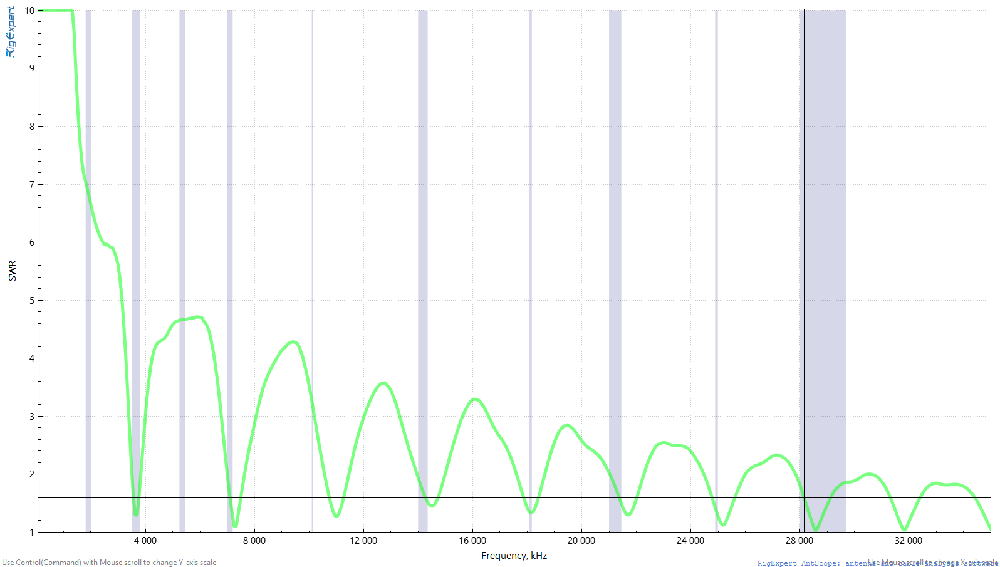
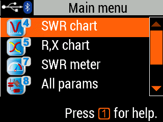

Die Delta-Loop ausmessen: RigExpert und AntScope2 in der Praxis
Von der ersten Messung zur richtigen Interpretation: 501 echte Messpunkte der Hari 80m Delta Loop von HB3XDC – mit interaktiver Auswertung.

Messgrafik und Messdaten: HB3XDC · Darstellung: RigExpert AntScope2.
Ein Messgerät beantwortet konkrete Fragen
Ein Antennenanalysator hilft beim Aufbau und bei der Fehlersuche: Wie sieht die Last am Anschluss aus? Wo ist die Anpassung günstig? Hat sich nach einer Änderung etwas verschoben? Der RigExpert AA-35 ZOOM deckt laut Hersteller 60 kHz bis 35 MHz ab. Er misst unter anderem Stehwellenverhältnis, Rückflussdämpfung und komplexe Impedanz. AntScope2 bringt diese Daten auf den Rechner und macht Vergleiche übersichtlicher.
Hier verwenden wir die echte CSV-Messung von HB3XDCs Hari 80m Delta Loop. Die Aufnahme zeigt das angeschlossene System an der jeweiligen Messebene. Ob direkt am Speisepunkt oder über ein Koaxkabel gemessen wurde, steht nicht in der Datei. Eine unbekannte Kabellänge oder ein Anpassglied wird deshalb nicht nachträglich angenommen.

Vor dem Messen: den Signalweg festlegen
Den Transceiver vollständig vom zu messenden Antennenkabel trennen. Keine Sendeleistung und keine Gleichspannung in den Analysator einspeisen. Bei Gewitter nicht an der Antennenanlage messen. RigExpert empfiehlt, statische Ladung vor dem Anschluss abzuleiten und beim PC-Betrieb zuerst das Antennenkabel am Analysator, danach USB anzuschliessen.
Für eine wiederholbare Messung notierst du Anschlussort, Kabel, Tunerstellung, Antennenaufhängung und Umgebung. Soll die Antenne ohne Tuner beurteilt werden, gehört dieser nicht unbemerkt in die Messstrecke. Eine Messung am Shack-Ende des Kabels beantwortet die Frage, welche Last dort ankommt; sie ist nicht automatisch die Impedanz am Antennendraht.
Mit AntScope2 zum ersten Vergleich
- AntScope2 über die offizielle RigExpert-Seite beziehen. Analysator anschliessen und prüfen, ob das erkannte Modell in der Anwendung angezeigt wird.
- Für dieses Beispiel 50 Ω als Bezug verwenden. Die CSV selbst speichert nur Frequenz, R und X; die hier berechneten SWR-Werte setzen 50 Ω ausdrücklich voraus.
- Zunächst einen breiten Frequenzbereich wählen. „Single“ startet einen einzelnen Scan. „Continuous“ eignet sich zum Beobachten während vorsichtiger Änderungen.
- Messungen in der Liste eindeutig benennen: beispielsweise „Ausgangszustand, trocken, Anschluss im Shack“. Neue Scans lassen sich zum Vergleich danebenlegen.
- Danach enger messen: Für 80 m etwa 3,4–3,9 MHz wählen. Eine schmale Darstellung allein schafft keine neuen Messpunkte; für mehr Detail einen neuen Scan ausführen.
- Mit Markern einzelne Frequenzen prüfen, zwischen SWR und R/X wechseln und die Messung samt CSV sichern.
SWR, R und X: drei Aussagen statt einer Zahl
R ist der Wirkwiderstandsanteil, X der Blindanteil der Impedanz Z = R + jX. Positives X bedeutet im Serienmodell induktives, negatives X kapazitives Verhalten. X nahe null kennzeichnet eine rein ohmsche Eingangsimpedanz an der gewählten Messebene. Das ist etwas anderes als perfekte Anpassung: 100 Ω ohne Blindanteil ergeben an 50 Ω ein SWR von 2.
Für die Auswertung rechnen wir |Γ| = √(((R−50)² + X²) / ((R+50)² + X²)) und SWR = (1+|Γ|)/(1−|Γ|). Ein SWR nahe 1 bedeutet geringe Reflexion am Bezugspunkt. Es sagt nicht, welcher Anteil der eingespeisten Leistung tatsächlich als Funkwelle abgestrahlt wird. Ein verlustbehaftetes Kabel oder ein Abschlusswiderstand kann ebenfalls eine unauffällige Anpassung zeigen.
Deine Messung selbst erkunden
Die CSV enthält 501 Punkte von 0,060 bis 35,000 MHz. Der Abstand beträgt 0,06988 MHz, also 69,88 kHz. Der folgende Betrachter zeigt die Originalpunkte; er erfindet keine feinere Messauflösung.
SWR-Darstellung auf 1–10 begrenzt; der Zahlenwert bleibt ungekürzt. Linien verbinden Messpunkte und sind keine zusätzlichen Messungen.
Original-CSV herunterladen ↧80 m: gute Anpassung, aber noch kein Feinscan
| MHz | R / Ω | X / Ω | SWR |
|---|---|---|---|
| 3.55400 | 32.38 | -10.32 | 1.65 |
| 3.62388 | 38.70 | 2.19 | 1.30 |
| 3.69376 | 51.31 | 12.90 | 1.29 |
| 3.76364 | 73.12 | 16.74 | 1.60 |
Der kleinste erfasste SWR-Wert in diesem Bandabschnitt liegt bei 3,69376 MHz mit etwa 1,29. Dort ist X mit +12,90 Ω jedoch nicht null. Bei 3,62388 MHz ist der Blindanteil mit +2,19 Ω näher an null, während R nur 38,70 Ω beträgt. Genau das zeigt den Unterschied zwischen SWR-Minimum und Resonanz am Messanschluss.
Alle vier erfassten Punkte innerhalb 3,5–3,8 MHz liegen unter SWR 2. Daraus folgt nicht, dass jede Frequenz dazwischen oder beide Bandgrenzen nachgewiesen sind: Das Raster ist dafür grob. Der nächste sinnvolle Schritt ist ein eigener Feinscan über den gewünschten Betriebsbereich, etwa mit 501 Punkten über 500 kHz und damit ungefähr 1 kHz Raster.
Warum die vielen Täler keine Bandfreigabe sind
Weitere auffällige erfasste Minima liegen beispielsweise bei 7,32752 MHz (SWR 1,10), 14,52516 MHz (1,45), 21,72280 MHz (1,29) und 28,57104 MHz (1,02). Mehrere liegen ausserhalb der üblichen entsprechenden Amateurfunk-Bandabschnitte in der Schweiz. Ein günstiges SWR ist keine Sendeberechtigung und auch kein Beleg für einen guten Wirkungsgrad auf diesem Band.
Wiederkehrende Täler können zur Mehrwellenlängen-Struktur einer Loop und zur gesamten Speiseleitung passen. Aus diesem Scan allein lassen sich aber weder Kabellänge noch ein bestimmter Transformator oder das Richtdiagramm eindeutig bestimmen. Auch die bei SWR 10 oben abgeschnittene Grafik bedeutet nicht, dass dort genau SWR 10 gemessen wurde: Der erste CSV-Punkt ergibt bei 50 Ω etwa 25,57.
Ändern, messen, vergleichen
Beginne mit einer gespeicherten Ausgangsmessung. Ändere nur eine Sache: Aufhängehöhe, Drahtführung oder einen reproduzierbaren Abschnitt. Miss anschliessend bei gleichem Anschlussort erneut. Ein tieferes Tal allein ist nicht das ganze Ziel; die Lage im gewünschten Band und die Breite des brauchbaren Bereichs zählen ebenfalls.
Für eine einfache Resonanzstruktur verschiebt Verlängern meist nach unten, Verkürzen nach oben. Bei einer real aufgehängten Loop wirken Umgebung und Speisung mit. Aus diesem Breitbandscan folgt deshalb keine belastbare Empfehlung, eine bestimmte Anzahl Zentimeter abzuschneiden. Erst den engeren Bereich messen und die Ursache einer Abweichung klären.
Was du aus dem Versuch mitnehmen kannst
Ein sinnvoller Messbericht enthält mehr als ein schönes SWR-Bild: die ursprünglichen Daten, 50-Ω-Bezug, Messebene, Aufbau und die bewusst geänderte Grösse. Ergänze später reale Empfangs- oder Funkvergleiche. Der Analysator beschreibt die elektrische Last; wie gut die Station in eine bestimmte Richtung funkt, braucht weitere Beobachtungen.